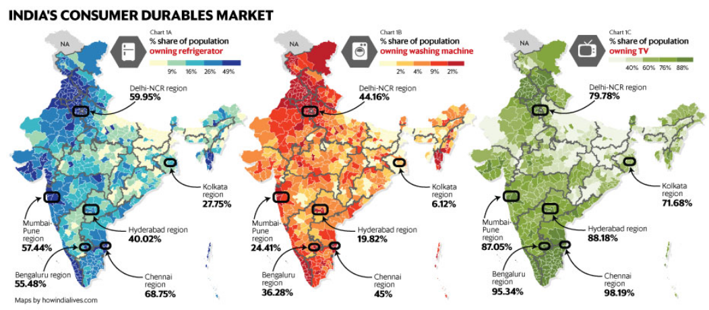

Samsung Electronics India Case study
Samsung Electronics India, is the largest player in consumer durables market in India. With close to 24% vendor market share in mobile phones segment and over 43% share in Refrigerators in the year 2018, Samsung Electronics is already choice of millions in India.
The following case study was done to target the next one billion. The next one billion users, a plan to target the millenials and population that is either not living in urban setting or is on a shift from rural to urban. The case study carefully considers the Indian Millenials and presents a proposal to make Samsung brand choice of millenials in India.
The reserach began with 3 basic questions regarding Millenials in India:
How is the typical consumer lifecycle and buying journey different for millennials?
Following were the three main observations regarding the buying journey :
- The appeal of User generated content : Reviews from Friends or Peers Carry a Lot of Weight in buying decisions
- Discounts, Deals, Offers : Price is primary influencer in buying decision for as much as 65% of millennials and around 90% of them would browse online deals before making purchase.
- Brand Loyalty: Millennials would switch between brands if a new brand resonates with them.
What are the big trends and possible evolution of preferences for millennials?
- "Generation Rent" 68% Millennials not living with their parents choose to rent amenities.
- 47% Millennials buy more than 30% of their needs online, which is set to grow up to 61% in next three years.
- Millennial’s desire for a customizable, adventurous experience.
- Entertainment and eating out (32.7%), apparel and accessories (21.4%) and electronics (11.2%).
What are the key brand differentiators that resonate with millennials?
- Brand loyalty not random : Millennials are highly attuned to the story that a brand tells, as well as the values that the brand exhibits.
- Millennials are 2.5X more likely to be adopters of new technology than other generations.
- Content creators and users. 46% of millennial post original photos or video online that they themselves have created
Millennial Archetype
Based on the above study we defined 3 non-exhaustive Millennial Archetype
The Urban Sanyasi
The millennial is a sanyasi of sort these days. They do not own anything other than a mobile phone and a laptop. They rent everything from apartment to even furniture. Since they are always on the move they are happy paying a monthly access fee instead of owning something which cripples their locomotion.
On the Lookout
Majority of the millennials tend to place their bets on experiences, expression and ethics. They gravitate toward products / services that are an expression of their own personality. They are promiscuous about brands and have no problem trying new, innovative brands rather than turning to a brand seen as old and reliable. They associate themselves with brands which give them a reason to connect and which gives back to the society and looking for other values like authenticity, local sourcing, ethical production and a great shopping experience.
Connectors Salesmen Mavens
More and More millennial trust the peer reviewed content, products and services, and thus generate a lot of User generated content which adds to the word of mouth publicity. It has been observed in various researches that millennial tend to trust products and services that a peer has recommended. Thus they would actively ignore the company generated adverts and go for peer reviewed content.sssss
Market Analysis
Next we did Indian Consumer durables market analysis :


Here we analysed the current ownership of various consumer durable goods in India, based on NFHS data. We saw that still a very large population in India lives without consumer durable goods like, refrigerator, TV, Washing Machine etc.
Proposed Strategy
Talking to millennials, we understood that they are always on the move. They graduated when unemployment was high, and jobs were scarce, all while shouldering massive debt from student loans. Some go even to the point of delaying marriage or children for financial reasons.Our strategy has two main pillars:
- 1. Combining/pairing different Samsung products to create a bundle
- 2. Partnering with other relevant service providers
Why this subscription model would work?
- 1. Works on the concept of Circular Economy
- 2. Ease of access to the appliance / service for a reasonable fee
- 3. Hassle free installing and servicing wherever you move